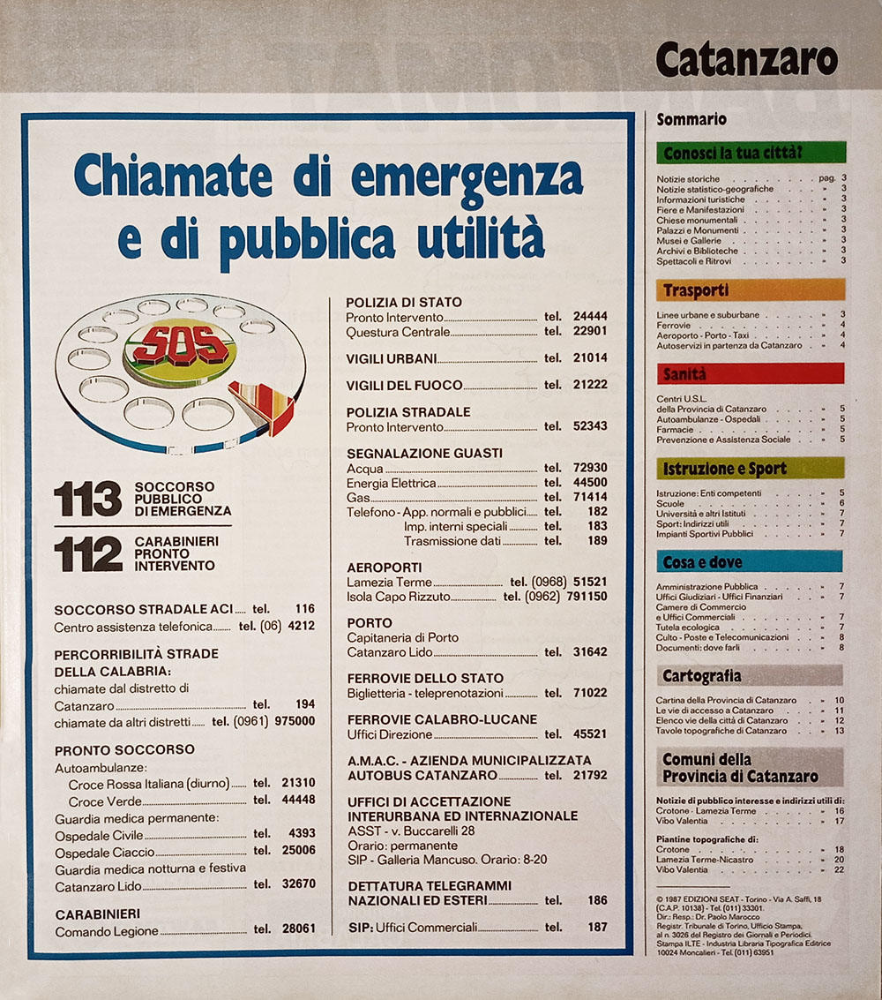
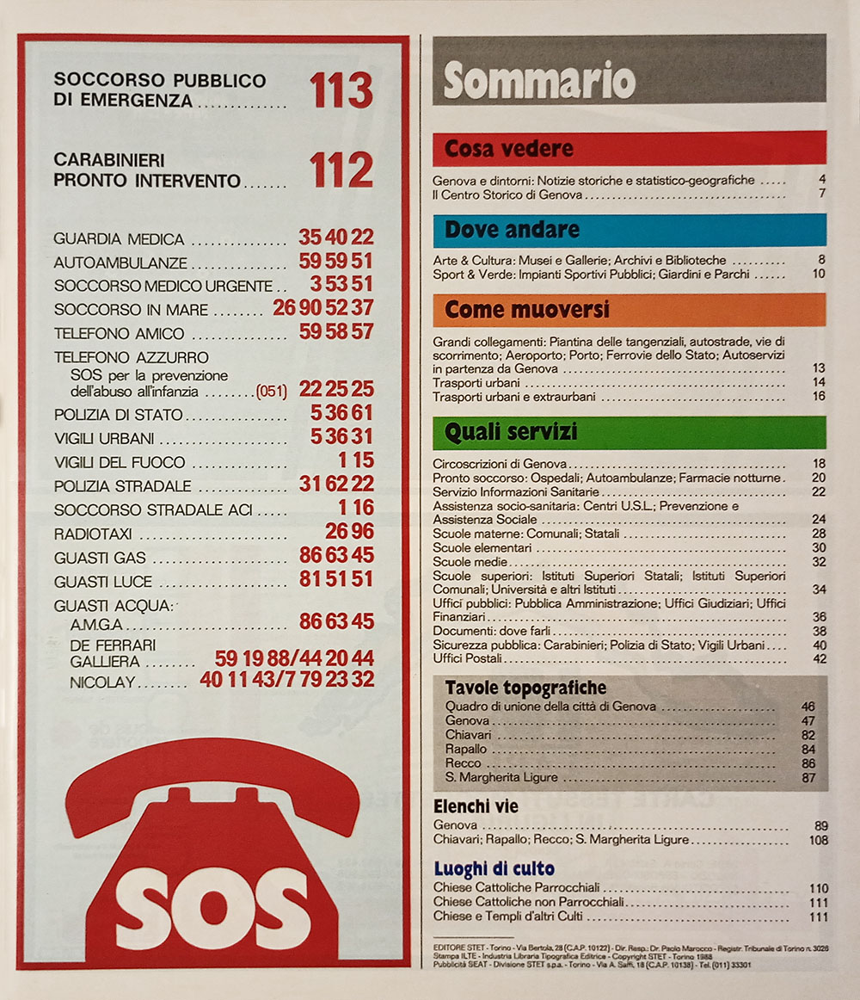
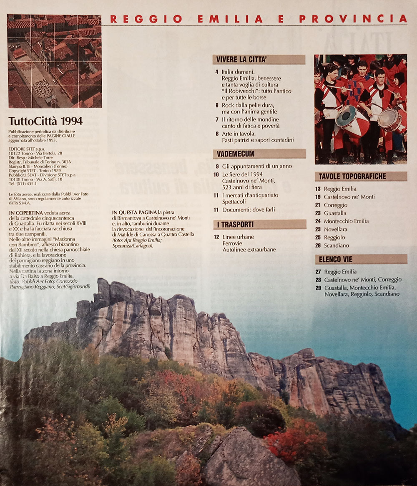

Le sezioni dei fascicoli
Contenuti standard
Nei fascicoli degli anni ottanta e per la maggior parte degli anni novanta, i fascicoli seguivano una scaletta standard, secondo un modello riscontrabile per tutte le province e le annate.
Serie classica degli anni ottanta

I fascicoli appartenenti alla serie classica degli anni ottanta, dunque precedenti alla riforma editoriale introdotta alla fine del 1989, comprendevano le seguenti sezioni.
- Sommario — ogni provincia aveva il suo sommario dedicato; ciò significa che nei fascicoli che includevano più province, ogni sezione dedicata a una specifica provincia aveva il suo sommario. In ogni sommario erano anche elencati i numeri di emergenza.
- Conosci la tua città? — questa sezione, contraddistinta dai titoli di colore verde, forniva informazioni di carattere geografico, storico e culturale sul capoluogo della provincia.
- Trasporti — la sezione, contraddistinta dai titoli di colore arancione, era dedicata ai servizi di trasporto pubblico urbano, extraurbano, alle ferrovie, ai porti e agli aeroporti, fino ai taxi e alle autolinee di collegamento fra i centri della provincia.
- Sanità — qui erano riportate le norme del servizio sanitario nazionale declinate per la specifica provincia, i centri delle unità sanitarie locali, gli ospedali, le farmacie e le autoambulanze; i titoli avevano il colore rosso.
- Istruzione e sport — questa sezione, i cui titoli erano di colore verde chiaro, comprendeva la lista di tutti gli istituti scolastici e universitari presenti nel capoluogo, nonché gli impianti sportivi pubblici.
- Cosa e dove — questa sezione, dai titoli di colore azzurro, raccoglieva numerose informazioni pratiche e indirizzi utili per il disbrigo delle faccende burocratiche e amministrative: vi erano elencati gli uffici dell'amministrazione pubblica, gli uffici giudiziari, gli uffici finanziari, le camere di commercio, nonché gli edifici di culto, gli uffici postali e quelli per la tutela ecologica. Una piccola sezione a parte, intitolata «Documenti: dove farli», era dedicata agli uffici preposti al rilascio di documenti.
- Mappa della provincia — una carta stradale con la provincia in evidenza. Poteva essere accompagnata da una mappa indicante le vie di accesso principali al capoluogo di provincia.
- Tavole topografiche ed elenco delle vie — questa era la parte fondamentale del fascicolo, che includeva la cartografia del capoluogo e dei centri principali della provincia, assieme agli elenchi delle vie. Spesso le mappe delle città della provincia erano precedute da una sezione in cui per i centri più importanti si riportavano indirizzi e contatti di uffici, scuole, ospedali e pubblica amministrazione.
Serie edifici

I fascicoli appartenenti alla serie edifici, quindi per le dieci città maggiori d'Italia, seguivano un modello leggermente modificato, i cui contenuti erano assortiti in modo differente. Per ogni sezione erano inoltre presenti delle mappe semplificate della città su cui erano riportati i riferimenti dei punti d'interesse specifici della relativa sezione.
- Sommario — un sommario iniziale dell'intero fascicolo. Nella medesima pagina erano anche elencati i numeri di emergenza.
- Cosa vedere — una sezione con contenuti analoghi alla prima parte della sezione intitolata «Conosci la tua città?» della serie classica. I titoli sono di colore rosso.
- Dove andare — contraddistinta da titoli di colore azzurro, questa sezione raccoglie le informazioni sulla cultura, sui musei, le biblioteche, lo sport e i parchi urbani.
- Come muoversi — qua erano raccolte tutte le informazioni sui trasporti locali, dai bus urbani ed extraurbani ai porti, agli aeroporti e alle ferrovie. I titoli erano di colore arancione ed era spesso presente una mappa della rete dei trasporti pubblici urbani.
- Quali servizi — sezione molto corposa che raccoglieva informazioni su uffici pubblici, uffici giudiziari, uffici preposti al rilascio di documenti, ospedali, farmacie, scuole e università. Il colore dei titoli era il verde.
- Tavole topografiche — la parte fondamentale del fascicolo, raccoglieva le tavole topografiche del capoluogo di provincia, precedute da un quadro d'unione, cui seguivano le tavole dei centri principali della provincia o dell'immediato circondario.
- Elenco delle vie — gli elenchi delle vie del capoluogo e dei centri della provincia erano riportati sempre dopo la sezione sulle tavole topografiche.
- Edifici di culto — questa piccola sezione chiudeva sempre il fascicolo e riportava la lista delle chiese e degli edifici di altri culti, assieme ai loro numeri di telefono.
Serie classica degli anni novanta

I fascicoli appartenenti alla serie classica degli anni novanta vennero pubblicati fra la fine del 1989 e la metà circa dell'annata 1997/98; questi fascicoli comprendevano le seguenti sezioni.
- Sommario — il fascicolo si apriva col sommario dei contenuti di entrambe le province; fa eccezione solo la prima annata, quando i sommari erano ancora divisi per provincia.
- Città e provincia — comprendeva una serie di articoli su storia, eventi, cultura e curiosità sulla città e sulla sua provincia. La sezione aveva come sottotitolo «Vivere la città».
- Gli appuntamenti di un anno — questa sezione, organizzata per mesi e sottotitolata «Vademecum», elencava tutti gli eventi previsti in città nell'arco dell'anno.
- Documenti: dove farli — una sezione presente anche negli anni ottanta, dedicata agli uffici preposti al rilascio di documenti.
- Mappa della provincia — una carta stradale con la provincia in evidenza. Poteva essere accompagnata da una mappa indicante le vie di accesso principali al capoluogo di provincia.
- I trasporti — spesso inclusa nella stessa pagina della mappa della provincia, questa sezione era dedicata ai servizi di trasporto pubblico urbano, extraurbano, alle ferrovie, ai porti e agli aeroporti, fino ai taxi e alle autolinee di collegamento fra i centri della provincia.
- Tavole topografiche — questa era la parte fondamentale del fascicolo, che includeva la cartografia del capoluogo e dei centri principali della provincia.
- Elenco delle vie — sezione dedicata alle vie dei comuni cartografati, dove si fornivano le coordinate per rintracciare una via sulle tavole topografiche.